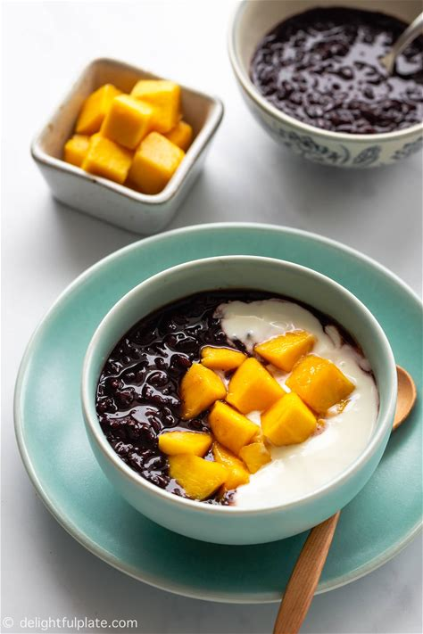

Black Sticky Rice Pudding is a popular Vietnamese dessert.
By using a pressure cooker such as an Instant Pot to make the
rice pudding, you can cut down on cooking time significantly.
The instructions in that recipe call for soaking black sticky
rice for several hours. I recently tried using my pressure
cooker to make the sticky rice pudding without soaking the
rice, and it worked! So now I can put together my favorite
dessert quickly.
RECEIPE
BENEFIT
NUTRITIONAL INFO
Ingredients :

- 3/4 cup - Black Sticky Rice
- 2 1/4 cups - Water
- Rock Salt - add pinch
- 4 tablespoons - Honey (to taste, sugar is okay too)
- Add some cubed mangoes for optional
- Add some yogurt
- If you want any additional toppings like fruits or nuts, you can add it for your wish.
Directions :
1. Rinse black sticky rice under water, then add it to the pressure cooker. Then add water and a pinch of salt.
Rice Cooking process: Soak for 12 hours, 1 cup with 5-6 cups of water, cook for 50 mins in the pot. Try to avoid
in the pressure cooker, but if you used set to 8 - 10 whistles.
2. Let the pressure release naturally (or quick release after 7-10 minutes of natural release). Stir in
honey (or sugar) and adjust the sweetness to your liking.
3. If you want the rice pudding to be thicker, you can change the cooking mode to Sauté to thicken it. If it's
too thick, just add a splash of water to thin it out.
Notes :
Please note that the black sticky rice pudding will continue to thicken as it cools down as well
as when you refrigerate it. Each pressure cooker brand and model may differ slightly, so you may
want to adjust the cooking time slightly to achieve the desired texture and consistency when you
make it the second time. My favorite way to enjoy black sticky rice pudding is to serve it with
yogurt (and some cubed mangoes, optional). You can let the rice pudding cool slightly, then add
it to serving bowl with yogurt and some crushed ice. Another option is to refrigerate the rice
pudding, and then serve it with yogurt later. This dessert is very popular in Vietnam.